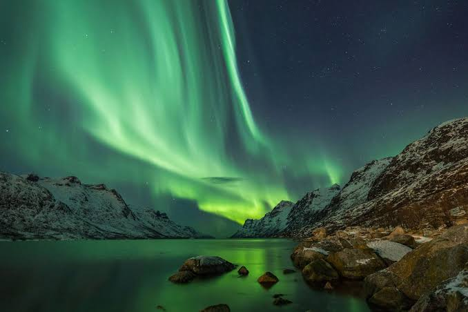

Best Places to Travel
-

India
Feel the Indian Traditions & CulturesPlaces you must visit in India:
*Goa
*Varanasi, Uttar Pradesh
*Taj Mahal, Agra, Uttar Pradesh
*Jaipur, Rajasthan:"Pink City"
*Udaipur, Rajasthan
*Kerala Backwaters, Kerala
*Rishikesh, Uttarakhand
*Haridwar, Uttarakhand
*Mysore, Karnataka
*Amritsar, Punjab
*Hampi, Karnataka
*Kolkata, West Bengal
There are alot more to visit in India and the list will carry to go on.
It Worth A Visit!!
-

France
Experience the romantic charm of the City of Love.
*Paris
*Provence
*French Riviera
*Loire Valley
*Mont Saint-Michel
*Bordeaux
*Lyon
*Versailles
*Normandy
*Corsica
-

Switzerland
Relax on the breathtaking beaches and enjoy stunning sunsets.
*Bern
*Lugano
*Zurich
*Lucerne
*Geneva
*Zermatt
*Interlaken
*Lausanne
*St. Moritz
*Montreux
-

Australia
The breathtaking natural lifstyle.
*Sydney, New South Wales
*Great Barrier Reef, Queensland
*Melbourne, Victoria
*Great Ocean Road, Victoria
*Gold Coast, Queensland
*Perth, Western Australia
*Hobart and Tasmania
*Adelaide and Barossa Valley, South Australia
*Cairns and the Daintree Rainforest, Queensland
*Uluru-Kata Tjuta National Park, Northern Territory
-
Indonesia
Offers a mix of religious and historical sites
*Bali
*Raja Ampat Islands
*Tanjung Puting National Park
*Flores Island
*Torajaland
*Bukit Lawang
*Lombok
*Yogyakarta
* Komodo National Park
*Bromo Tengger Semeru National Park
-

UAE
Feel The Royality.
*Burj Khalifa
*Dubai Mall
*Palm Jumeirah
*Dubai Creek
*Dubai Marina
*Jumeirah Beach
*Dubai Museum
*The Dubai Fountain
*Desert Safari
*Dubai Frame
*Global Village
-

United-Kingdoms
Feel The British Culture.
*London
*Edinburgh, Scotland
*Stonehenge, England
*Bath, England
*Oxford, England
*Cambridge, England
*The Lake District, England
*York, England
*Belfast, Northern Ireland
*Cardiff, Wales
-

Netherland
Feel Alive.
*Amsterdam
*Rotterdam
*The Hague
*Keukenhof
*Utrecht
*Maastricht
*Giethoorn
*Delft
*Haarlem
*Kinderdijk
-

San-Francisco
Metalic Nature.
*Golden Gate Bridge
*Alcatraz Island
*Chinatown
*Fisherman's Wharf
*Golden Gate Park
*Union Square
*Cable Cars
*Exploratorium
*Haight-Ashbury
*Lombard Street
-

Taiwan
Feel the rich cultural heritage.
*Taipei
*Jiufen
*Taroko National Park
*Sun Moon Lake
*Alishan
*Tainan
*Kenting National Park
*TaichungTaichung
*Yehliu Geopark
*Penghu Islands
-

United-States
Visit the diverse range of tourist destinations.
*New York City, New York
*Miami, Florida
*Washington, D.C
*Chicago, Illinois
*Honolulu, Hawaii
*Los Angeles, California
*San Francisco, California
*Las Vegas, Nevada
*Grand Canyon, Arizona
*New-Orleans, Louisianaehliu Geopark
-
Japan
Feel a diverse range of tourist destinations.
*Tokyo
*Kyoto
*Osaka
*Nara
*Nikko
*Hakone
*Sapporo
*Okinawa
*Kanazawa
*Hiroshima
-
Brazil
Offers a diverse range of Tourism.
*Búzios
*Rio de Janeiro
*São Paulo
*Salvador
*Iguazu Falls
*Florianópolis
*Pantanal
*Bonito
*Fernando de Noronha
*Manaus and the Amazon Rainforest
-
Spain
Visit the diverse range of tourist destinations.
*Barcelona
*Madrid
*Seville
*Granada
*Valencia
*Ibiza
*Cordoba
*Malaga
*Bilbao
*Canary Islands
-
Italy
Get known to Italies rich history, stunning landscapes, art & culture.
*Rome
*Florence
*Venice
*Milan
*Cinque Terre
*Amalfi Coas
*Tuscany
*Sicily
*Lake Como
*Pompeii and Mount Vesuvius
-
Thailand
Feel the diverse range of attractions.
*Bangkok
*Phuket
*Chiang Mai
*Ayutthaya
*Krabi
*Pattaya
*Koh Samui
*Sukhothai
*Hua Hin
*Pai
-
Germany
Know its historic sites,castles,picturesque towns,& world-renowned beer festivals.
*Berlin
*Phuket
*Munich
*Hamburg
*Cologne
*Dresden
*Heidelberg
*Neuschwanstein Castle
*The Black Forest
*The Romantic Road
*The Rhine Valley
-
Mexico
Know its ancient ruins, beautiful beaches, vibrant culture.
*Mexico City
*Guanajuato
*Oaxaca
*Playa del Carmen
*Puerto Vallarta
*San Miguel de Allende
*Cabo San Lucas
*Chiapas
*Cancún and the Riviera Maya
*Mérida and the Yucatan Peninsula
-
South-Korea
Offers a mix of modern cities like Seoul,
traditional temples such as Gyeongbokgung Palace,
*Seoul
*Busan
*Jeju Island
*Tongyeong
*Gangneung
*Chuncheon
*Daegu
*Gwangju
*Tongyeong
*Suncheon
-
Egypt
Home to ancient wonders like the Pyramids of Giza, the Sphinx.
*Luxor
*Abu Simbel
*Egyptian Museum, Cairo
*Nile River Cruise
*Alexandria
*Aswan
*Dahab
*Siwa Oasis
*Sinai Peninsula
*Pyramids of Giza and the Sphinx, Cairo
-
Turkey
A country that bridges Europe and Asia, with a mix of cultural influences.
*Istanbul
*Cappadocia
*Pamukkale
*Ephesus
*Antalya
*Bodrum
*Troy
*Pergamon
*Mount Ararat
*Göreme National Park and Rock Sites of Cappadocia
-
Argentina
Offers vibrant cities like Buenos Aires, the stunning landscapes of Patagonia,
the majestic Iguazu Falls, and the tango culture.
*Buenos Aires
*Iguazu Falls
*Perito Moreno Glacier
*Bariloche
*Mendoza
*El Calafate
*Salta
*Ushuaia
*Puerto Madryn
*Cordoba
-
Newzeland
Known for its breathtaking scenery, adventure sports, and outdoor activities.
*Auckland
*Queenstown
*Milford Sound
*Rotorua
*Wellington
*Christchurch
*Abel Tasman National Park
*Fox and Franz Josef Glaciers
*Napier
*Waitomo Caves
-
Greece
Know its ancient history, beautiful islands.
*Athens
*Santorini
*Mykonos
*Crete
*Rhodes
*Delphi
*Meteora
*Nafplio
*Corfu
*Olympia
-
Canada
Famous for its vibrant Carnival celebrations, stunning beaches.
*Banff National Park
*Niagara Falls, Ontario
*Vancouver, British Columbia
*Quebec City, Quebec
*Whistler, British Columbia
*Toronto, Ontario
*Churchill, Manitoba
*Jasper National Park, Alberta
*Prince Edward Island
*Halifax, Nova Scotia
-
South-Africa
Famous for its vibrant Carnival celebrations, stunning beaches.
*Cape Town, Western Cape
*Johannesburg, Gauteng
*Robben Island, Western Cape
*Durban, KwaZulu-Natal
*Stellenbosch, Western Cape
*Cape Winelands, Western Cape
*Drakensberg Mountains, KwaZulu-Natal
*Addo Elephant National Park, Eastern Cape
*Garden Route, Western Cape and Eastern Cape
*Kruger National Park, Mpumalanga and Limpopo
-
China
Known for its richness in history and culture.
*Great Wall of China, Beijing
*Forbidden City, Beijing
*Forbidden City, Beijing
*Li River, Guilin
*Zhangjiajie National Forest Park, Hunan
*The Bund, Shanghai
*Yellow Mountain (Huangshan), Anhui
*Lhasa and Potala Palace, Tibet
*Chengdu, Sichuan
*West Lake, Hangzhou
-
Tanzania
Known for breathtaking landscapes, including Mount Kilimanjaro,
Serengeti National Park.
*Serengeti National Park
*Mount Kilimanjaro
*Zanzibar
*Ngorongoro Conservation Area
*Tarangire National Park
*Selous Game Reserve
*Lake Manyara National Park
*Mafia Island
*Ruaha National Park
*Mikumi National Park
-
Morocco
A vibrant country with bustling markets,
beautiful architecture in cities like Marrakech and Fes,& the Sahara Desert.
*Marrakech
*Fes
*Casablanca
*Chefchaouen
*Essaouira
*Merzouga (Sahara Desert)
*Atlas Mountains
*Rabat
*Tangier
*Agadir
-
Russia
Offers a mix of historical sites such as the Red Square & the Hermitage Museum,
along with natural wonders
*Moscow
*St. Petersburg
*Kazan
*Vladivostok
*Kamchatka Peninsula
*Irkutsk
*Yekaterinburg
*Lake Baikal
*Golden Ring
*Nizhny Novgorod
-
Peru
Home to the ancient Inca ruins of Machu Picchu, the colorful city of Cusco
*Machu Picchu
*Cusco
*Sacred Valley
*Arequipa
*Lima
*Sacred Valley
*Lake Titicaca
*Nazca Lines
*Colca Canyon
*Amazon Rainforest
-
Ice-Land
Offers unique landscapes with volcanoes, geysers, waterfalls
*Reykjavik
*Blue Lagoon
*Golden Circle
*Seljalandsfoss
*Skógafoss
*Jökulsárlón Glacier Lagoon
*Vatnajökull National Park
*Landmannalaugar
*Skaftafell Nature Reserve
*Thingvellir National Park
-
Maldives
A tropical paradise known for its pristine white-sand beaches,
crystal-clear turquoise waters
*Male
*Hulhumale
*Maafushi
*North Male Atoll
*Baa Atoll
*Ari Atoll
*South Male Atoll
*Addu Atoll
*Vaadhoo Island
*Alimatha Island
-

Norway
Offers stunning fjords, breathtaking landscapes in places
*Oslo
*Bergen
*Tromsø
*Stavanger
*Trondheim
*Ålesund
*Geirangerfjord
*Lofoten Islands
*Svalbard
*Flam
-
Vietnam
Known for its rich history, bustling cities like Hanoi and Ho Chi Minh City
*Hanoi
*Ho Chi Minh City (formerly Saigon)
*Ha Long Bay
*Hoi An
*Da Nang
*Nha Trang
*Hue
*Mekong Delta
*Phu Quoc Island
*Sapa
-
Kenya
Offers incredible wildlife safaris in national parks like Masai Mara,
the stunning landscapes of the Great Rift Valley
*Masai Mara National Reserve
*Nairobi National Park
*Mount Kenya
*Amboseli National Park
*Samburu National Reserve
*Hell's Gate National Park
*Aberdare National Park
*Ol Pejeta Conservancy
*Great Rift Valley
*Lake Naivasha
-
Sweden
Known for its beautiful landscapes, including the picturesque city of Stockholm
*Malmö
*Helsingborg
*Örebro
*Västerås
*Karlskrona
*Marstrand
*Kalmar
*Karlskrona
*Visby
*Falun
-
Croatia
Renowned for its stunning Adriatic coastline, historic cities
*
Dubrovnik
*Split
*Plitvice Lakes National Park
*Krka National Park
Šibenik
*Pula
*Korčula
*Trogir
*Makarska
*National Park Brijuni
*Dubrovnik
-
Jordan
Offers the ancient city of Petra, the magnificent Wadi Rum desert
*Dead Sea
*Dana Biosphere Reserve
*Mount Nebo
*Wadi Rum
*Ma'in Hot Springs
*Shobak Castle
*Umm Qais
*Aqaba
*Mount Nebo
*Al-Maghtas (Bethany Beyond the Jordan)
-
Portugal
Known for its charming cities like Lisbon and Porto, picturesque coastal towns
*The Lisbon Oceanarium
*Sintra National Palace
*St George's Castle
*Jeronimos Monastery
*Monserrate Palace
*News Museum
*Evora Cathedral
*Porto Bridge
*Cais da Ribeira
*Roman Temple
-
Israel
Offers a mix of religious and historical sites
*Jerusalem
*Bethlehem
*Nazareth
*Tel Aviv
*Acre
*Haifa
*Jaffa
*Dead Sea Region
*Sea Of Galilee
*Eilat
Back